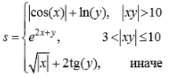
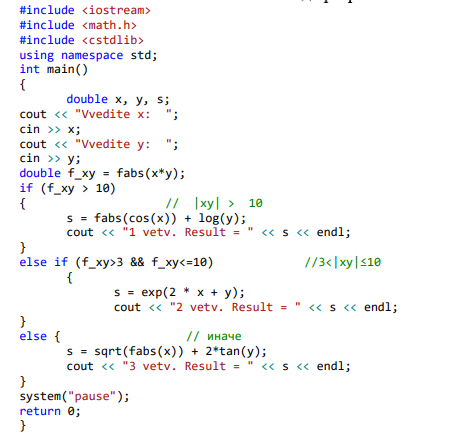

Операции сравнения применяются при работе с двумя операндами и возвращают true (1), если результат сравнения – истина, и false (0), если результат сравнения – ложь. В языке С определены следующие операции сравнения:
Логические операции работают с операндами скалярных типов и возвращают результат булева типа. Существует три логические операции:
Форматы оператора if:
if(логическое_выражение) оператор_1; else оператор_2;
Если логическое выражение истинно, то выполняется оператор_1, иначе – оператор_2.
if (логическое_выражение) оператор_1;
Если логическое_выражение истинно, то выполняется оператор_1.
if (логическое_выражение_1) оператор_1; else if (логическое_выражение_2) оператор_2 else оператор_3;
Если логическое_выражение_1 истинно, то выполняется оператор_1, иначе, если логическое_выражение_2 истинно, то выполняется оператор_2, иначе выполняется оператор_3.
Общая форма оператора:
switch (переменная_выбора) { case const_1: операторы_1; break; ... case const_N: операторы_N; break; default:операторы_N+1; }
переменная_выбора, const_1,…, const_N – константа, переменная или выражение целого, символьного или логического типа.
При использовании оператора switch сначала анализируется переменная_выбора и проверяется, совпадает ли её значение со значением одной из констант const_1, …, const_N. При совпадении выполняются операторы этого case. Конструкция default (может отсутствовать) выполняется, если результат выражения не совпал ни с одной из констант.
Написать программу вычисления выражения:
Предусмотреть вывод информации о выбранной ветви вычислений.
Код программы для решения данной задачи будет выглядеть следующим образом:
